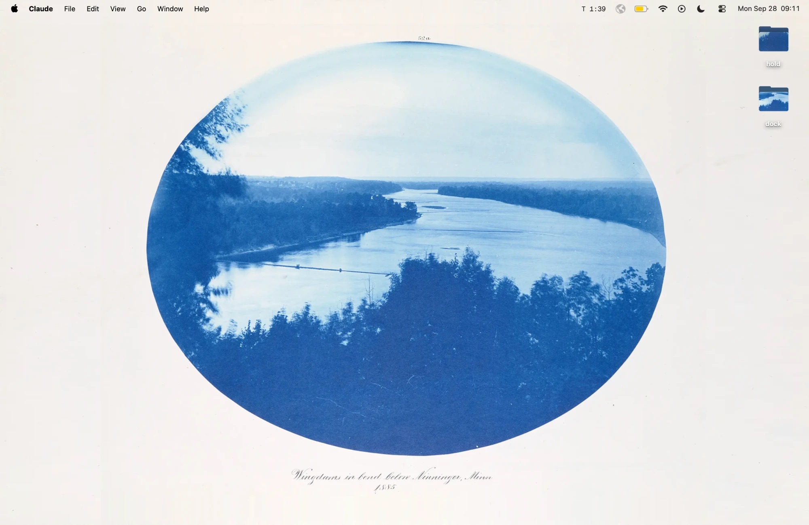
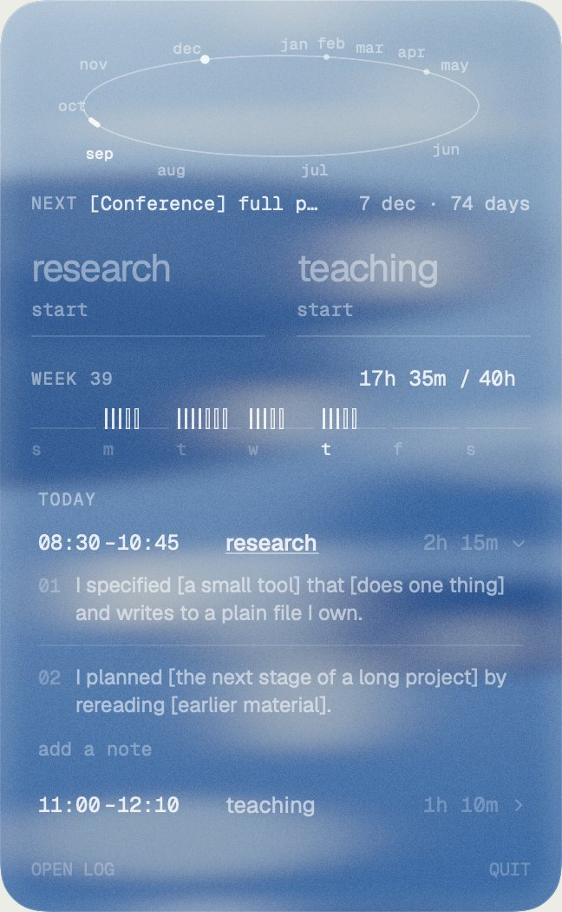
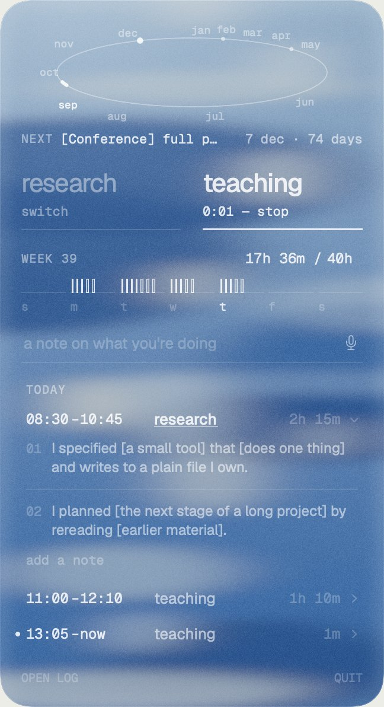
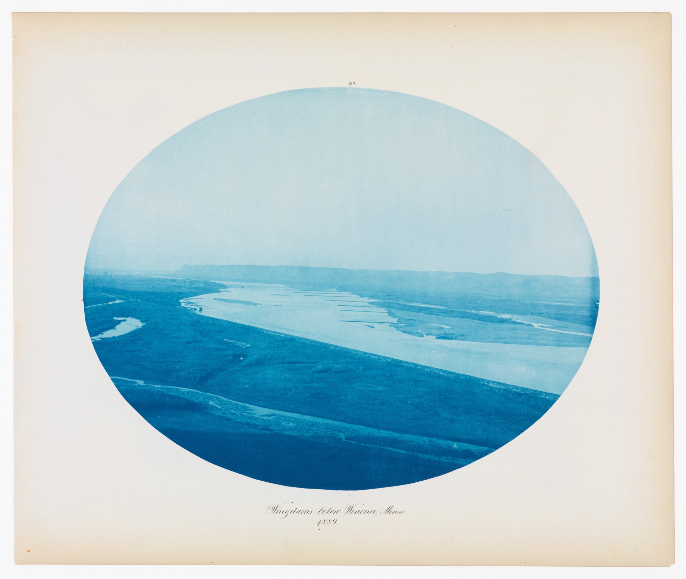
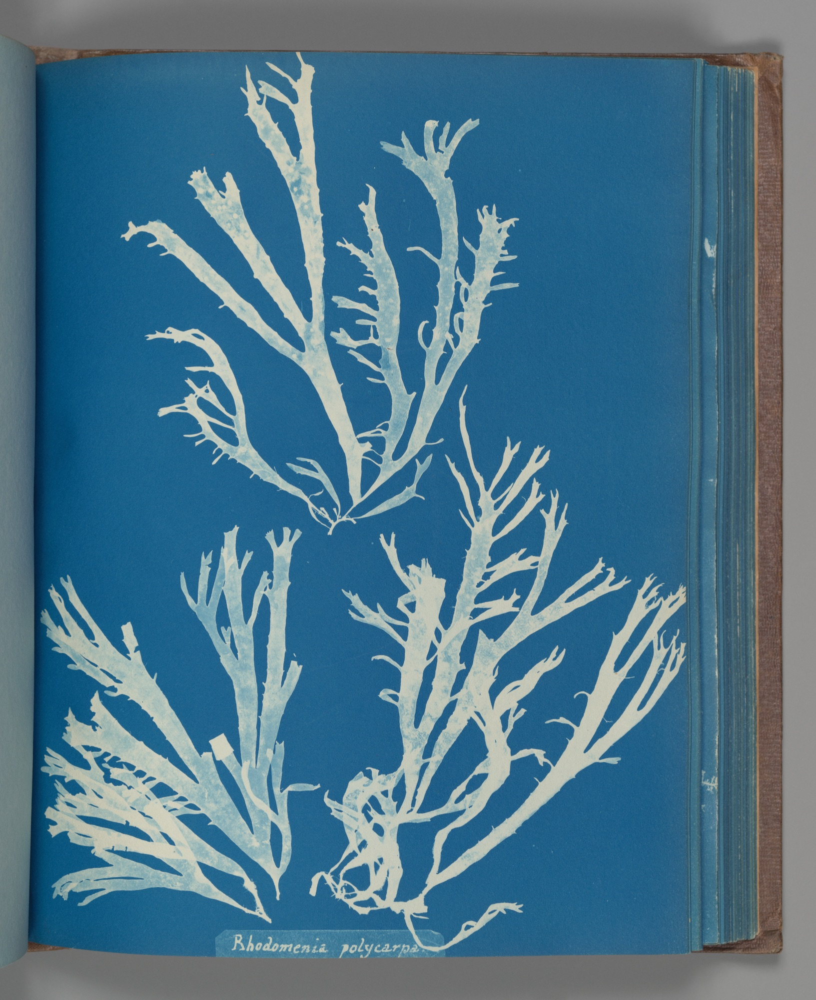
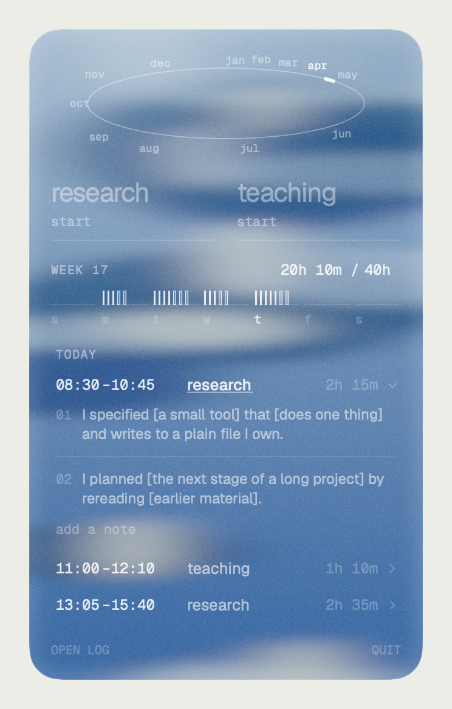

Knolling
Knolling is a menu-bar clock for the two kinds of work my weeks divide into: research and teaching. I tap one to clock in, tap it again to clock out, and tap the other to switch. Every session, with any notes I type or dictate, goes into one plain Markdown file on my own computer. Knolling lays my hours out flat, as my studio lays out its files, so I can see where the time went.
Source: github.com/caseysimoneb/knolling, MIT licensed.

T 0:01

My desktop, with Henry P. Bosse’s 1885 cyanotype of the Mississippi as the wallpaper, and Knolling open from the menu bar. The menu is drawn from sample data.
1Why a clockI didn’t see how my time divided until a summer engineering internship where I had to clock in and clock out.
1Why a clock
I didn’t see how my time divided until a summer engineering internship where I had to clock in and clock out. As someone critical of surveillance capitalism, I found the ritual supportive: organizing, even animating. Clocking in gave the day a shape, so I took the ritual back for myself.
The name comes from knolling: laying objects out flat, at right angles, so every piece and its relations can be seen at once. Tom Sachs made it a studio rule.
Tom Sachs, 10 Bullets, #8: “Always Be Knolling”, YouTube.
2Time, drawn the way I feel itI have temporal synesthesia: I experience time as having a shape in space, and Knolling draws it that way.
2Time, drawn the way I feel it
I have temporal synesthesia: I experience time as having a shape in space, and Knolling draws it that way. The year is an oval in perspective, each month placed by hand: September low on the left, winter bunched along the top, summer spread along the bottom. The week is flat, and each hour worked is an upright tick, solid for research and hollow for teaching. There is no daily quota: no ring to fill, no day that is full. The year also holds my deadlines, read from a plain file of their own.
One year in forty seconds. Knolling reads the dates from a plain file of deadlines, here as placeholders; click one to find it on the year, or click the year to add a date of yours.
3Aesthetic inspirationThe palette comes from nineteenth-century cyanotype survey photographs: Prussian blue leaning cyan, and the warm white of the paper.
3Aesthetic inspiration
The palette comes from nineteenth-century cyanotype survey photographs: Prussian blue leaning cyan, and the warm white of the paper. The menu is a pane of glass over its own backdrop, pale forms seen through moving water, drawn fresh each week.



4The repositoryKnolling’s code is public, under an MIT licence.
4The repository
Knolling’s code is public, under an MIT licence. It can be changed in many ways: other kinds of work than research and teaching, a year redrawn to someone else’s synesthesia, the Claude record and token counts turned on or off. Whatever the changes, Knolling keeps one plain text file, and my hand edits to it are never overwritten.
Source: github.com/caseysimoneb/knolling, MIT licensed.
Clock in, switch, add a note, then change a time in the file: the menu reads it back. The faint numbers are tokens, what Claude used during a session when the Claude record is on.